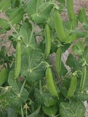

さやえんどう（莢豌豆）の生産量 都道府県ランキング
1位から3位までと、とれた量
さやえんどうが日本でいちばん多くとれるのは鹿児島県です。5,100 tで、全国（1万8,300 t）の28%を占めます。

| 順位 | 都道府県 | 収穫量 | 全国に占める割合 |
|---|---|---|---|
| 1位 | 鹿児島県 | 5,100 t | 28% |
| 2位 | 愛知県 | 1,460 t | 8.0% |
| 3位 | 福島県 | 990 t | 5.4% |
この数字について
- 分類：マメ科
- 全国の収穫量：1万8,300 t
- この数字が表すもの：収穫量（畑や田でとれた重さ）
- 調査：作物統計調査 作況調査（野菜） 令和6年産
- 24県分を調査（調査していない県は順位に入りません）
さやえんどうの生産量について、よくある質問
- さやえんどうの生産量が日本一の都道府県はどこですか？
- 鹿児島県です。作物統計調査 作況調査（野菜）（令和6年産）で5,100 tでした。
- さやえんどうの生産量ランキング2位・3位はどこですか？
- 2位は愛知県（1,460 t）、3位は福島県（990 t）です。
- さやえんどうの全国の生産量はどれくらいですか？
- 1万8,300 t（令和6年産）です。